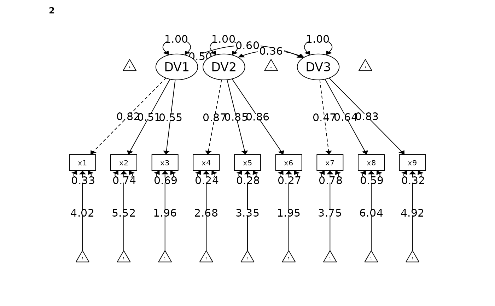
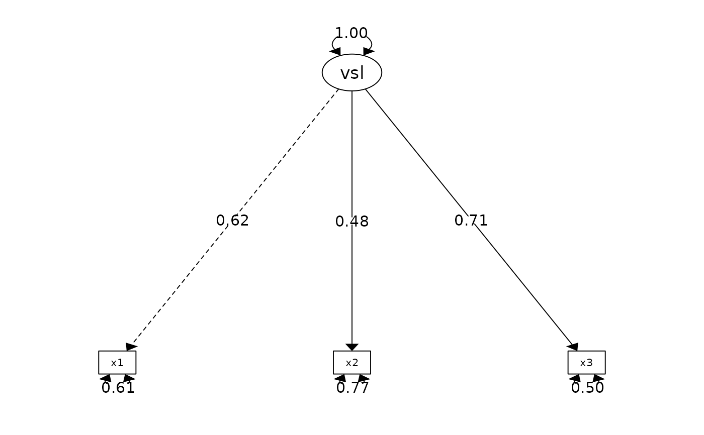

Confirmatory Factor Analysis
cfa_summary.Rd![[Stable]](figures/lifecycle-stable.svg)
The function fits a CFA model using the lavaan::cfa(). Users can fit single and multiple factors CFA, and it also supports multilevel CFA (by specifying the group).
Users can fit the model by passing the items using dplyr::select() syntax or an explicit lavaan model for more versatile usage.
All arguments (except the CFA items) must be explicitly named (e.g., model = your-model; see example for inappropriate behavior).
cfa_summary( data, ..., model = NULL, group = NULL, ordered = FALSE, digits = 3, model_covariance = TRUE, model_variance = TRUE, plot = TRUE, group_partial = NULL, streamline = FALSE, quite = FALSE, return_result = FALSE )
Arguments
| data | data frame |
|---|---|
| ... | CFA items. Multi-factor CFA items should be separated by comma (as different argument). See below for examples. Support |
| model | explicit |
| group | optional character. used for multi-level CFA. the nested variable for multilevel dataset (e.g., Country). Support |
| ordered | Default is |
| digits | number of digits to round to |
| model_covariance | print model covariance. Default is |
| model_variance | print model variance. Default is |
| plot | print a path diagram. Default is |
| group_partial | Items for partial equivalence. The form should be c('DV =~ item1', 'DV =~ item2'). |
| streamline | print streamlined output |
| quite | suppress printing output |
| return_result | If it is set to |
![[Experimental]](figures/lifecycle-experimental.svg)
Value
a lavaan object
Details
First, just like researchers have argued against p value of 0.05 is not a good cut-of, researchers have also argue against that fit indicies (more importantly, the cut-off criteria) are not completely representative of the goodness of fit. Nonetheless, you are required to report them if you are publishing an article anyway. I will summarize the general recommended cut-off criteria for CFA model below. Researchers consider models with CFI (Bentler, 1990) that is > 0.95 to be excellent fit (Hu & Bentler, 1999), and > 0.9 to be acceptable fit. Researchers considered a model is excellent fit if CFI > 0.95 (Hu & Bentler, 1999), RMSEA < 0.06 (Hu & Bentler, 1999), TLI > 0.95, SRMR < 0.08. The model is considered an acceptable fit if CFI > 0.9 and RMSEA < 0.08. I need some time to find all the relevant references, but this should be the general consensus.
References
Hu, L., & Bentler, P. M. (1999). Cutoff criteria for fit indexes in covariance structure analysis: Conventional criteria versus new alternatives. Structural Equation Modeling, 6, 1–55. https://doi.org/10.1080/10705519909540118
Examples
# REMEMBER, YOU MUST NAMED ALL ARGUMENT EXCEPT THE CFA ITEMS ARGUMENT # Fitting a multilevel single factor CFA model fit <- cfa_summary( data = lavaan::HolzingerSwineford1939, x1:x3, x4:x6, x7:x9, group = "sex", model_variance = FALSE, # do not print the model_variance model_covariance = FALSE # do not print the model_covariance )#> #> #> Model Summary #> Model Type = Confirmatory Factor Analysis #> Group = sex #> Model Formula = #> . DV1 =~ x1 + x2 + x3 #> DV2 =~ x4 + x5 + x6 #> DV3 =~ x7 + x8 + x9 #> #> Fit Measure #> ────────────────────────────────────────────────────────────────────────────────────── #> Χ² DF P CFI RMSEA SRMR TLI AIC BIC BIC2 #> ────────────────────────────────────────────────────────────────────────────────────── #> 105.795 48.000 0.000 *** 0.935 0.089 0.063 0.903 7517.633 7740.060 7549.774 #> ────────────────────────────────────────────────────────────────────────────────────── #> #> #> Factor Loadings #> ─────────────────────────────────────────────────────────────────────────────────────── #> Latent.Factor Observed.Var group Std.Est SE Z P 95% CI #> ─────────────────────────────────────────────────────────────────────────────────────── #> DV1 x1 1 0.725 0.094 7.736 0.000 *** [0.541, 0.909] #> x2 0.329 0.094 3.495 0.000 *** [0.144, 0.513] #> x3 0.602 0.089 6.729 0.000 *** [0.426, 0.777] #> DV2 x4 0.835 0.035 23.613 0.000 *** [0.766, 0.904] #> x5 0.857 0.034 25.461 0.000 *** [0.791, 0.923] #> x6 0.818 0.037 22.222 0.000 *** [0.746, 0.890] #> DV3 x7 0.644 0.077 8.408 0.000 *** [0.494, 0.794] #> x8 0.864 0.081 10.606 0.000 *** [0.704, 1.023] #> x9 0.490 0.079 6.237 0.000 *** [0.336, 0.644] #> DV1 x1 2 0.820 0.062 13.212 0.000 *** [0.699, 0.942] #> x2 0.511 0.073 6.962 0.000 *** [0.367, 0.654] #> x3 0.553 0.071 7.813 0.000 *** [0.414, 0.692] #> DV2 x4 0.872 0.028 30.994 0.000 *** [0.817, 0.927] #> x5 0.850 0.030 28.253 0.000 *** [0.791, 0.909] #> x6 0.856 0.030 28.930 0.000 *** [0.798, 0.914] #> DV3 x7 0.469 0.076 6.184 0.000 *** [0.320, 0.618] #> x8 0.638 0.067 9.485 0.000 *** [0.506, 0.770] #> x9 0.827 0.064 12.945 0.000 *** [0.702, 0.952] #> ─────────────────────────────────────────────────────────────────────────────────────── #> #> #> Goodness of Fit: #> Warning. Poor χ² fit (p < 0.05). It is common to get p < 0.05. Check other fit measure. #> OK. Acceptable CFI fit (CFI > 0.90) #> Warning. Poor RMSEA fit (RMSEA > 0.08) #> OK. Good SRMR fit (SRMR < 0.08) #> OK. Acceptable TLI fit (TLI > 0.90) #> Warning. Some poor factor loadings (some loadings < 0.4)# Fitting a CFA model by passing explicit lavaan model (equivalent to the above model) # Note in the below function how I added `model = ` in front of the lavaan model. # Similarly, the same rule apply for all arguments (e.g., `ordered = FALSE` instead of just `FALSE`) # \donttest{ fit <- cfa_summary( model = "visual =~ x1 + x2 + x3; textual =~ x4 + x5 + x6;", data = lavaan::HolzingerSwineford1939, quite = TRUE # silence all output )# } if (FALSE) { # This will fail because I did not add `model = ` in front of the lavaan model. # Therefore,you must add the tag in front of all arguments # For example, `return_result = 'model'` instaed of `model` cfa_summary("visual =~ x1 + x2 + x3 textual =~ x4 + x5 + x6 speed =~ x7 + x8 + x9 ", data = lavaan::HolzingerSwineford1939 ) }